はじめに（5分で最初の1枚）
下の順番で登録して「作成」を押すだけで、夜勤回数や連続勤務のきまりを守ったシフト表ができます。
データはすべてiPhoneの中だけに保存され、外部には送信されません。ログインも、インターネット接続も不要です。
1病棟を登録する
- 下のタブの「病棟」を開き、「最初の病棟を追加」を押します。
- 病棟名（例: 3階東病棟）を入れて「保存」します。病院名は空欄でもかまいません。
病棟は複数登録でき、病棟ごとにスタッフ・きまり・シフト表が別々に保存されます。病棟名は長押しで編集できます。
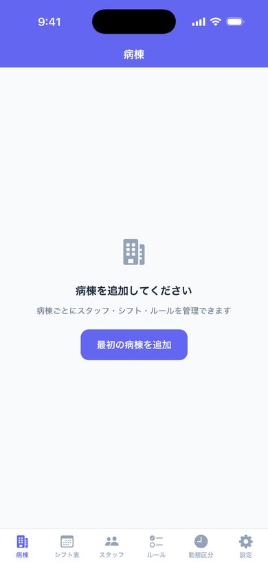
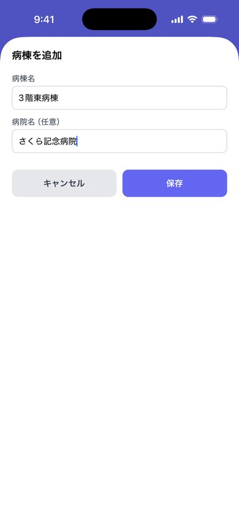
2スタッフを登録する
1人ずつ追加する
- 「スタッフ」タブの右下の＋を押します。
- 名前を入れ、下の項目を選んで保存します。
- 夜勤可：夜勤に入れる人はオン。オフにすると夜勤は入りません。
- リーダー：リーダーができる人はオン。
- 新人（1〜2年目）：新人だけの勤務にならないよう配慮します。
- 月夜勤上限：その人が月に入れる夜勤の最大回数。
名簿を貼り付けてまとめて登録する
- 「スタッフ」タブ右上の「取り込み」を押し、「スタッフを一括登録（名簿の貼り付け）」を選びます。
- Excelやメモの名簿をコピーして貼り付けます。1行に1人です。
- 読み取った一覧を確認して登録します。
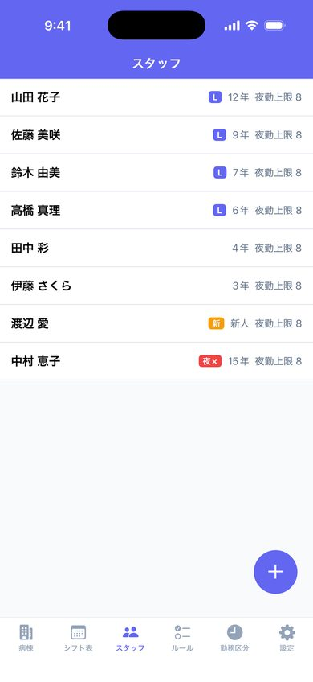
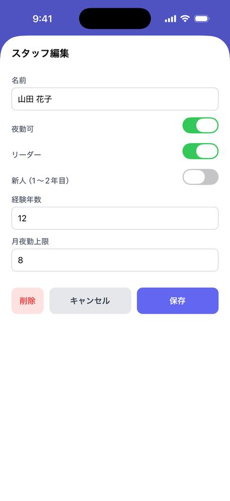
3勤務区分と必要人数を確認する
「勤務区分」タブには、日勤・準夜・深夜・有給・休みが最初から入っています。勤務をタップすると、次の項目を変えられます。
- 開始・終了の時刻
- 曜日ごとの必要人数
- 経験年数ごとの人数
- 「リーダーを必ず1人入れる」のオン／オフ
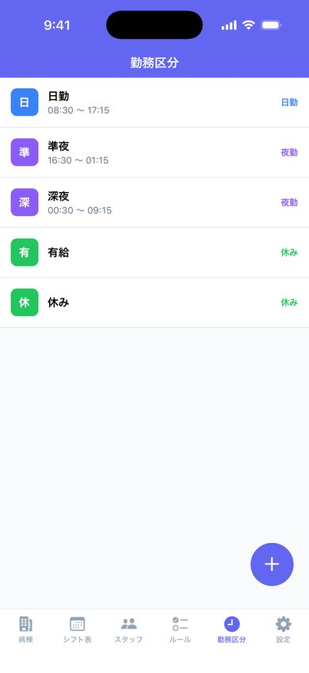
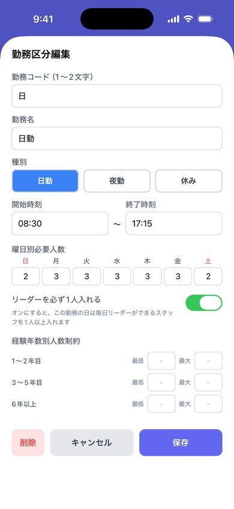
4希望休・固定したい勤務を入れる
1つずつ入れる
- 「シフト表」タブで、スタッフと日付のマスを長押しします（空のマスでもOK）。
- 勤務（休み・日勤など）を選びます。
- 「必須（必ず通す）」か「希望（なるべく通す）」を選びます。
必須は緑、希望は青の印が付きます。
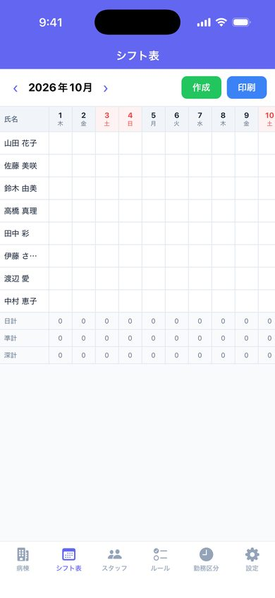
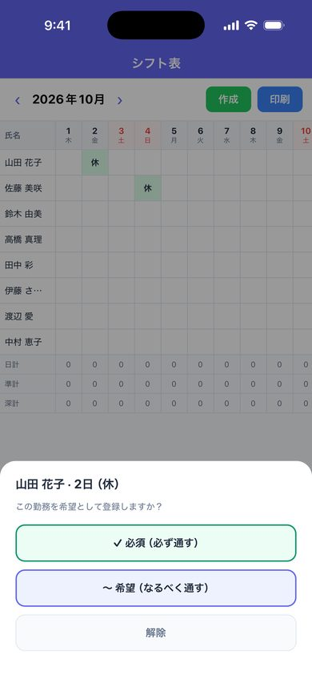
LINEで届いた希望休をまとめて入れる
- LINEで届いた希望の文をコピーします（複数人分をまとめてでもかまいません）。
- 「スタッフ」タブ右上の「取り込み」を押し、「希望休を貼り付けで取り込む」を選んで貼り付けます。
- 読み取った一覧（誰の・何日・何の勤務か）を確認し、違うものはオフにしてから「取り込む」を押します。
- 読み取りに自信がない行（3交代で「夜勤」とだけ書かれた日など）は、オレンジの枠でオフになっています。内容を確かめてからオンにしてください。
- 名前が分からない行は、名前を1回選ぶと、同じ書き方の行にまとめて当たります。
- 「午前休」「無理です」「取り消し」の日や、別の月の日付は取り込みません。
読める書き方の例は、取り込み画面の上に表示されます。
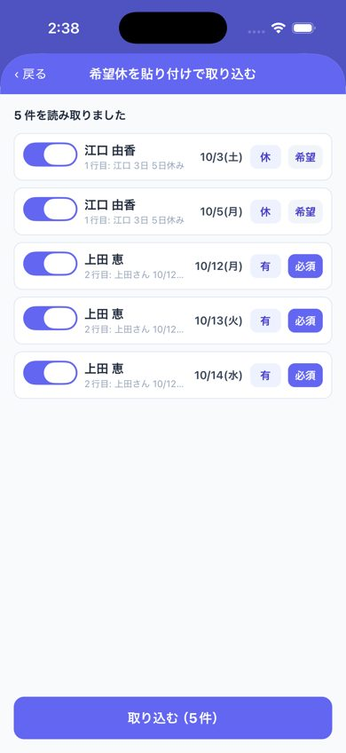
5「作成」を押す
- 右上の「作成」を押します。「9 守っているきまり」を守りながら、自動でシフトを組みます。人数によって数秒〜十数秒かかり、上に進み具合（%）が出ます。
- 守りきれなかったことがあれば、表の下に「制約違反」として表示されます。直し方は「6」を見てください。
- マスをタップするたびに勤務が切り替わるので、そのまま手直しできます。
- 手直ししたマスにはオレンジの三角が付き、違反の一覧もすぐ数え直されます。
- もう一度「作成」しても、手直ししたマスはそのまま残ります。
- 前の月の表があれば、月末の勤務を見て月初の連勤や夜勤明けも守ります。
- 「‹ ›」で月を切り替えられます。表は月ごとに保存されます。
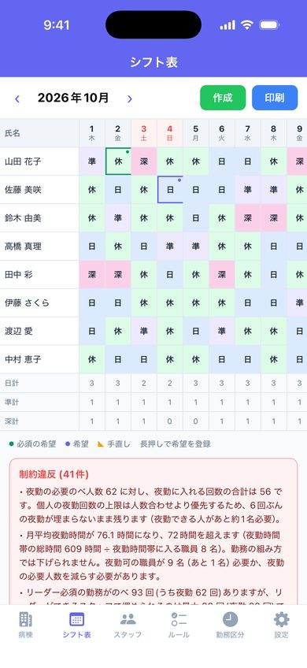
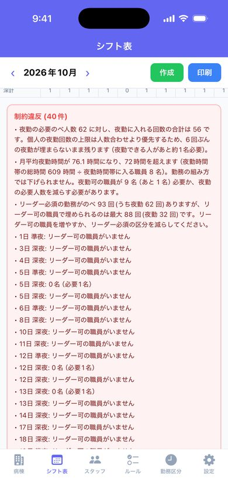
6違反をまとめて直す
違反があると、違反一覧の中に赤い「違反をまとめて直す」ボタンが出ます。押すと10〜20秒（%で進み具合を表示）で、次の3つを順に行います。
- 組み替え：手直ししたマスと必須の希望は動かさずに、勤務を組み替えて違反を減らします。元より悪くなる組み替えは使いません。
- 原因の表示：埋まらない日ごとに、なぜ入れる人がいないのか（夜勤回数の上限・勤務の間隔など）を表示します。
- 設定の案：違反が減る設定の変え方を最大3つ、実際に組み直したときの件数つきで出します。
あとは「この表にする」か「この設定で直す」を押すだけです。設定を変える前には確認が出ます。変えた設定は、あとから設定画面で戻せます。
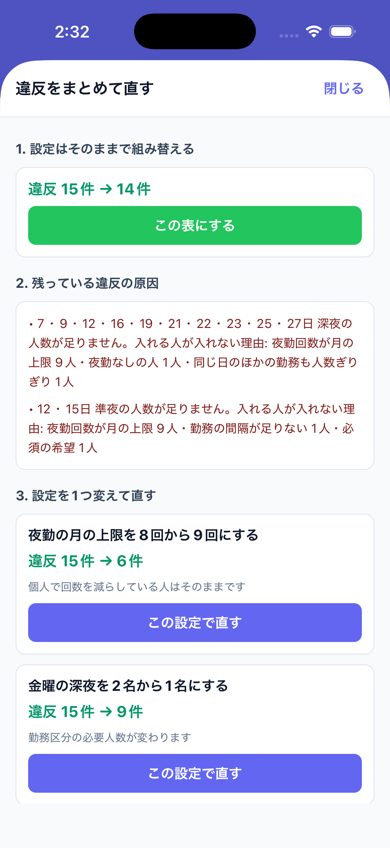
7印刷する・PDFで送る
印刷する
右上の「印刷」を押すと、A4横・勤務ごとの色分けで、病院名・病棟名・凡例つきで印刷できます（AirPrint対応プリンター）。
プリンターとiPhoneが同じWi-Fiにつながっていれば、インターネットは不要です。
PDFにしてLINE・メールで送る
- 作成後、表の下の「PDFにしてLINE・メールで送る」を押します。
- 「勤務表のみ」か「勤務表＋集計」を選びます。
- 送り先（LINE・メール・ファイルに保存など）を選びます。コンビニのネットプリントでも印刷できます。
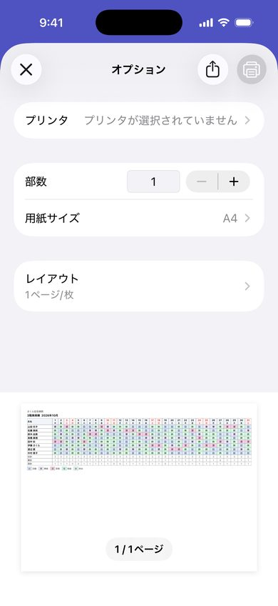
8病院のパソコンへ写す・集計を見る
1人ずつ大きく表示
病院のパソコン（勤務管理システム）に手で打ち込むときの見本です。
- 作成後、表の下の「1人ずつ大きく表示」を押します。
- 1人分の1か月がカレンダーの形で大きく出ます。見ながら打ち込みます。
- 打ち終えたら「この人は病院のパソコンに入力済み」にチェックを付け、「次の人」へ進みます。
途中でアプリを閉じてもチェックは残り、次は未入力の人から始まります。表を作り直すとチェックは消えます。「日ごと」に切り替えると、その日の担当者を勤務ごとに表示します。
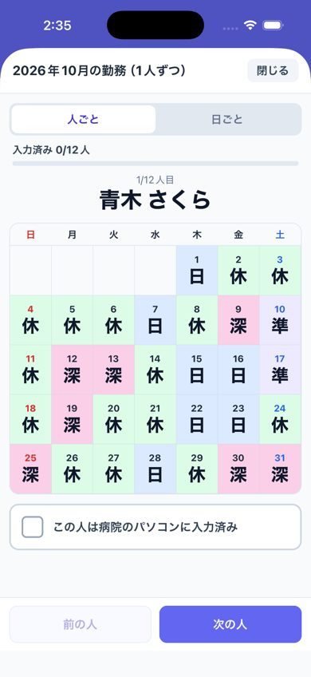
夜勤時間（様式9）と公平性の集計
表の下の「夜勤時間（様式9）と公平性の集計を見る」から開きます。月平均夜勤時間と、スタッフごとの夜勤回数・休み・土日の休み・希望の通り方を並べ、偏りがあれば知らせます。
提出用の正式な帳票ではなく、確認用の集計です。
9守っているきまり
「ルール」タブで変更できます。
- 月夜勤上限・夜勤の連続上限・勤務間インターバル（初期は11時間。深夜の翌日の準夜などは自動で入りません）
- 月平均夜勤時間の上限（様式9）
- 連続勤務の上限、夜勤後の休み、週末の連続休み
- 2連休の翌日は夜勤にしない
- 禁止したい勤務の並び（初期: 深→休→深）、一緒にしないペア
- 月の希望休の上限
初期設定では「土日の休みの翌日は深夜にしない」も守ります（この項目は今のところ画面からは変更できません）。
師長が手直しした並びは「師長の手直しパターン」に集まります。「ルール化」を押すと、次から自動作成がその並びを避けます。
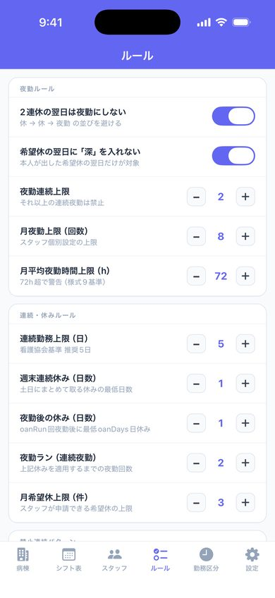
困ったとき
Q. 「作成」しても制約違反がたくさん出る
まず違反一覧の中の「違反をまとめて直す」を押してください（「6」を参照）。原因と、違反が減る設定の変え方を表示します。
多くの場合、人数に対して条件が厳しすぎます。「必須」の希望が多すぎる場合も組みにくくなります。
Q. 月を切り替えたら表が消えた
表は月ごとに保存されています。「‹ ›」で元の月に戻ると表示されます。
Q. データを消したい／機種変更したい
「設定」→「データ管理」から表示中の月の表を消去できます。データは端末内だけに保存されるため、機種変更では自動で移りません。
そのほかのご質問・ご要望は nurseshift@clawtechjp.com へ。サポート ／ プライバシーポリシー